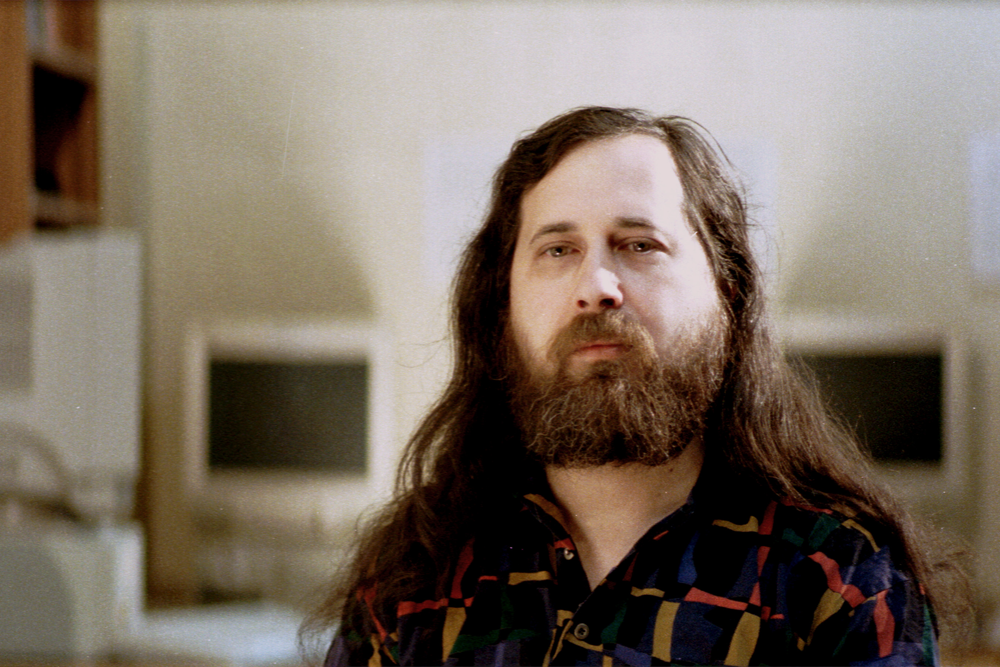

Start Speaker View with S key.
To Darken the screen press B.
A Gentile Introduction to Linux
Armenian Engineers and Scientists of America
Created by Armen Babakanian / Linkedin Profile
Overview
- What is Linux?
- A Short History
- Where it's used?
- Demonstration
Part 1
What is Linux?
It's an Open-Source Operating System
It's an Operating System (OS) like Windows and Mac
But it's Open-Source so you can get the code, modify it and install it
Which also means, you can get it for free
This is it's logo

And you can get from kernel.org

And this is kinda what it looks like
(Not very user-friendly)
Here is a more beginner friendly looking version of Linux
But the default Linux doesn't come with any of that
There are ready made packages available that are user-friendly to download.
These packages are called distributions
Here are the most popular Linux distributions:
Ubuntu
The most downloaded distribution, and it's Debian based

CentOS
The second most downloaded distribution, and it's Redhat based
Fedora
The 3rd most downloaded distribution, and it's also Redhat based
Interested in trying it out?
- Live Bootable USB
- Virtual Machine
Live Bootable USB
- Download Rufus and install it
- Download one of the distributions mentioned above
- Write the Image on the USB using Rufus
- Insert USB stick into machine and reboot the computer
Virtual Machine
- Download VMPlayer and install it
- Download one of the distributions mentioned above
- Install Linux on the virtual machine
- Start Linux
Part 2
A Short History
It started in 1965 at AT&T Bell Labs
Ken Thompson and Dennis Ritchie created an operating system called Unix, written in C
In 1983 Richard Stallman started the GNU Project
His goal was to create a free UNIX-like operating system, so he started creating tools necessary to create an operating system.
In 1991 the Linux Kernel was created

Linus Torvalds started working on an OS as a hobby project, and he released the source code to the public so others can use it and make it better
The rise of GNU/Linux
"Who would have thought even five years ago (1991) that a world-class operating system could coalesce as if by magic out of part-time hacking by several thousand developers scattered all over the planet, connected only by the tenuous strands of the Internet" -Eric S. RaymondGNU/Linux is installed on millions of devices, ranging from big server banks to small devices.
Part 3
Where it's used?
Android Phones

Home Routers/WiFi
...DD-WRT is a Linux based alternative OpenSource firmware suitable for a great variety of WLAN routers and embedded systems...
Drones
Dronecode is an open source, collaborative Unmanned Aerial Vehicles (UAVs) platform that serves as a trusted and neutral home to become the de facto standard platform for drone/robotics open projects.
IntroductionRobotics
Baxter is a collaborative robot that's lowering the barrier to entry for flexible factory automation. It runs ROS and Linux.
Baxter folding shirtHacking
Kali Linux is a Debian-derived Linux distribution designed for digital forensics and penetration testing with over 300 penetration-testing programs
Other
- Smart Home Kits
- Video Game Consoles
- Tables
- Smart Watches
- Web Servers
- 3D Render Farms
- Distributed computing
- IoT
- etc...
Part 4
Demonstration
Website development
We will create a simple responsive portfolio page
- Get Bootstrap
- Create two pages with photos
- Create a VPS machine
- upload website
Embedded System
Turn a an LED using the raspberry pi
- Connect an LED to a PI machine
- Write a python script to turn it on and off